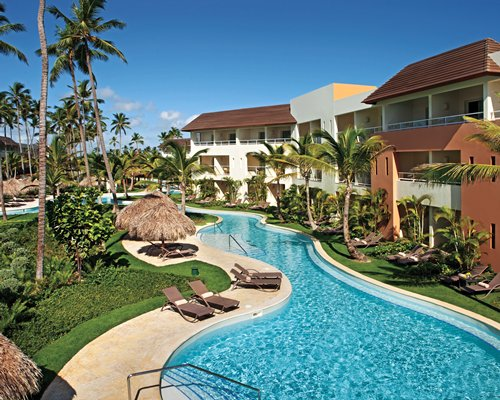

We're here to give you insite on Punta Cana and it's beautiful scenery complimented by the endless accomedations included! Now Larimar is known for it's beautiful poolside hotel rooms. They stretch across the main pool and flow through our hotel rooms to channel your inner mermaid! Come along and check out your curated guide to fully enjoy your vacation!
Make sure to visit our official website! We Provide further insight on how much your majestic trip will be.Why Punta Cana? The best resort in the Carribean?﹏﹏𓂁﹏⊹ ࣪ ˖

Visitors can enjoy world-class all-inclusive resorts, vibrant nightlife, championship golf courses, and unforgettable excursions like snorkeling, catamaran cruises, and island hopping. Add in the warm hospitality of the Dominican Republic, and Punta Cana stands out as a paradise that truly has something for everyone. Punta Cana is a tropical paradise known for its year-round sunshine, crystal-clear turquoise waters, and powdery white-sand beaches like Bavaro Beach. Punta Cana offers the perfect blend of relaxation, adventure, and unforgettable Caribbean beauty.
⋆｡𖦹 ˚ 𓇼 ˚｡⋆⋆｡𖦹 ˚ 𓇼 ˚｡⋆⋆｡𖦹 ˚ 𓇼 ˚｡⋆⋆｡𖦹 ˚ 𓇼 ˚｡⋆⋆｡𖦹 ˚ 𓇼 ˚｡⋆To be sure of your travels, lets get further insight on the next page! Click Here ⋆｡𖦹 ˚ 𓇼 ˚｡⋆⋆｡𖦹 ˚ 𓇼 ˚｡⋆⋆｡𖦹 ˚ 𓇼 ˚｡⋆⋆｡𖦹 ˚ 𓇼 ˚｡⋆